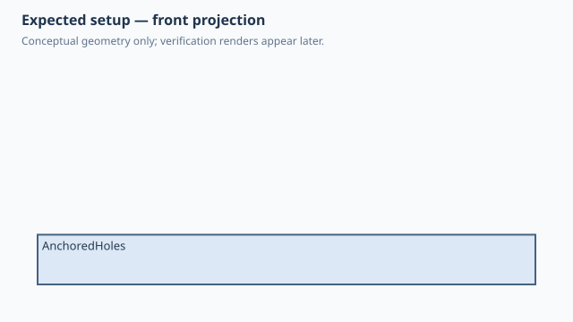

Forge model example
Face-relative hole with native pattern
What this example makes
One plate with two through holes at the requested Y spacing, one source cut and one native rectangular pattern feature.

Forge code
This is the complete Forge source used for this example.
"""Face-relative Hole cut repeated by one native history pattern."""
from dataclasses import dataclass
@dataclass
class AnchoredHoles:
"""Two through holes, each 20 mm from the center along the Y axis."""
width: float = 100
depth: float = 60
thickness: float = 10
spacing: float = 40
def build(self):
with Sketch(name="Base", plane="XY") as sketch:
profile = Rectangle2D(self.width, self.depth)
sketch.add(
profile,
offset=(self.width / 2, self.depth / 2),
)
plate = sketch.extrude(self.thickness)
with Sketch(
name="Hole",
on=plate,
parent=Anchor.TOP,
) as hole:
hole.add(
Circle2D(d=8),
offset=(
self.width / 2,
(self.depth - self.spacing) / 2,
),
)
source_cut = hole.extrude(Depth.THROUGH_ALL)
plate = plate - source_cut
return plate.rectangular_pattern(
source_cut,
count=2,
spacing=self.spacing,
direction=Axis.Y,
)
AnchoredHoles()
API used
with Sketch(on=plate, parent=Anchor.TOP): Circle2D(...); source_cut = sketch.extrude(Depth.THROUGH_ALL); plate.rectangular_pattern(source_cut, ...)
Reference code
The same model is written independently with the reference libraries below. This makes it easier to compare modelling style and the resulting shape.
PythonSCAD
"""PythonSCAD reference: a 100 x 60 x 10 plate with two through holes.
This case deliberately uses the lower-left-bottom corner as world origin. The
PythonSCAD cube center code "---" places that datum on the minimum side of all
three axes, so the plate grows directly into +X/+Y/+Z without a corrective
translation.
"""
from pythonscad import *
width = 100
depth = 60
thickness = 10
spacing = 40
plate = cube([width, depth, thickness], center="---")
hole = cylinder(d=8, h=thickness + 2, center=True)
left_hole = hole.translate([width / 2, depth / 2 - spacing / 2, thickness / 2])
right_hole = hole.translate([width / 2, depth / 2 + spacing / 2, thickness / 2])
model = plate - (left_hole | right_hole)
pyBOSL2
"""pyBOSL2 reference: a plate with two symmetric through holes.
The qualification intent uses the lower-left-bottom world corner as (0, 0, 0).
pyBOSL2 primitives are centred by default, so this reference places their
centres explicitly while preserving the same visible geometry.
"""
from pybosl2 import cuboid, cyl
width = 100
depth = 60
thickness = 10
spacing = 40
plate = cuboid([width, depth, thickness]).translate(
[width / 2, depth / 2, thickness / 2]
)
hole = cyl(diameter=8, height=thickness + 2)
left_hole = hole.translate(
[width / 2, depth / 2 - spacing / 2, thickness / 2]
)
right_hole = hole.translate(
[width / 2, depth / 2 + spacing / 2, thickness / 2]
)
model = plate - (left_hole | right_hole)
CadQuery
"""CadQuery reference for a plate with two symmetric through holes."""
import cadquery as cq
width = 100.0
depth = 60.0
thickness = 10.0
spacing = 40.0
plate = (
cq.Workplane("XY")
.box(width, depth, thickness, centered=(False, False, False))
.faces(">Z")
.workplane()
.pushPoints([
(width / 2, depth / 2 - spacing / 2),
(width / 2, depth / 2 + spacing / 2),
])
.hole(8.0)
)
model = cq.Assembly()
model.add(plate, name="plate")
build123d
"""build123d reference for the original lower-left-bottom plate datum."""
from build123d import Align, Box, BuildPart, Cylinder, Locations, Mode
width, depth, thickness, spacing = 100.0, 60.0, 10.0, 40.0
with BuildPart() as model:
Box(
width,
depth,
thickness,
align=(Align.MIN, Align.MIN, Align.MIN),
)
with Locations(
(width / 2, depth / 2 - spacing / 2, thickness / 2),
(width / 2, depth / 2 + spacing / 2, thickness / 2),
):
Cylinder(4.0, thickness + 2, mode=Mode.SUBTRACT)
How Forge builds it in SolidCraft
Forge emits one attached Hole sketch/cut and one native solid.pattern.rectangular history feature. No Forge-side repeat helper or expanded duplicate profiles are used.
Show generated SolidCraft commands
parameters.add
parameters.add
parameters.add
parameters.add
sketch.create
sketch.rectangle.two_point
sketch.finish
solid.extrude
model.faces
sketch.create
sketch.circle.center
sketch.finish
solid.extrude
solid.pattern.rectangularSolidCraft result
Technical test details
Q1 and Q2 tests
These are the exact automated tests used for this example.
- Q1 NOT RUN
- Q2 NOT RUN
Geometry checks
These are the sizes and measurement points used by the automated checks.
| Body | Minimum | Maximum |
|---|---|---|
| AnchoredHoles | [0, 0, 0] | [100, 60, 10] |
- Is the size check enough for this model? No — The holes do not change the outer plate bounds. Volume and 3D hole-wall probes are required.
- Views checked: top, right, iso
- Internal features checked: 2
- Expected volume: 58994.69035085127 mm³ (±55.0 mm³)
- Closed solid expected: True
- Surface points checked: 6
Show all geometry check points
Internal features
- front hole Ø8 through: centre
[50.0, 10.0], diameter 8.0 mm, Z[0.0, 10.0] - rear hole Ø8 through: centre
[50.0, 50.0], diameter 8.0 mm, Z[0.0, 10.0]
Surface measurement points
- front hole at z=1: point
[50.0, 10.0, 1.0]→ 4.0 mm (±0.3 mm) - front hole at z=5: point
[50.0, 10.0, 5.0]→ 4.0 mm (±0.3 mm) - front hole at z=9: point
[50.0, 10.0, 9.0]→ 4.0 mm (±0.3 mm) - rear hole at z=1: point
[50.0, 50.0, 1.0]→ 4.0 mm (±0.3 mm) - rear hole at z=5: point
[50.0, 50.0, 5.0]→ 4.0 mm (±0.3 mm) - rear hole at z=9: point
[50.0, 50.0, 9.0]→ 4.0 mm (±0.3 mm)
Saved-design test
No saved-model change is required. No saved-design mutation in this fixture; geometry and feature placement are measured at Q4.
Raw test files
- Forge fixture source
- PythonSCAD reference source
- pyBOSL2 reference source
- CadQuery reference source
- build123d reference source
- Generated command JSON in build output
Reference documentation
- OpenSCAD: Comparable geometry normally uses difference() and repeated cylinders. This case instead qualifies one semantic TOP-face source cut plus native SolidCraft pattern history; native solid.hole itself is qualified separately by hole-family.